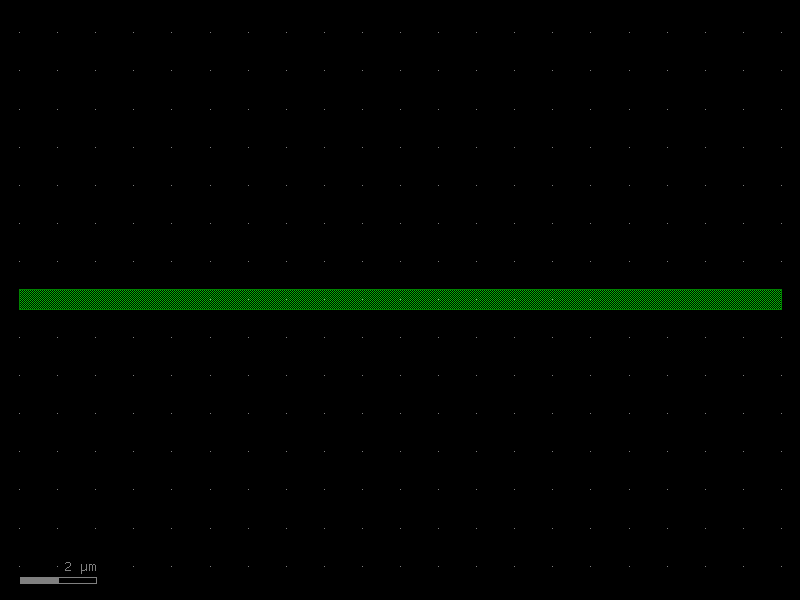
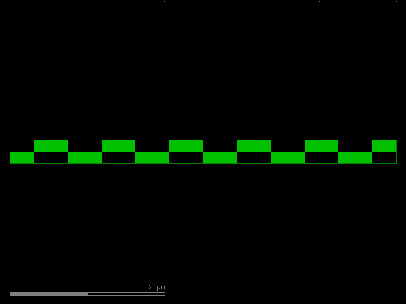
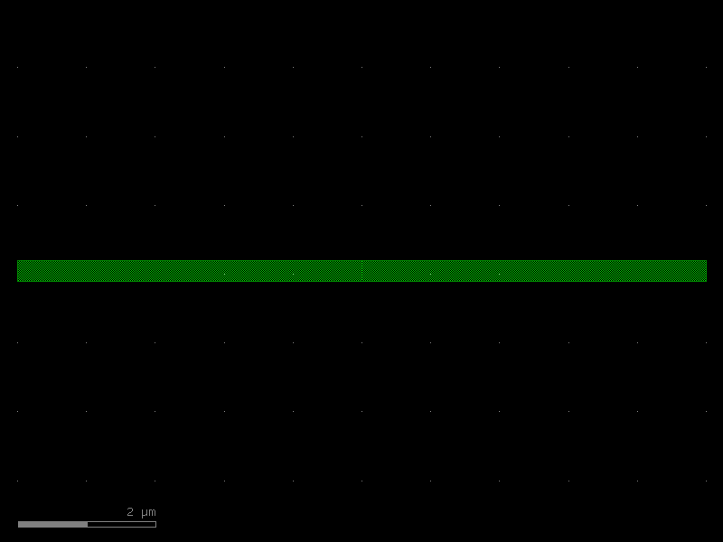

Cross-Sections
A cross-section bundles everything that describes a waveguide (or wire) profile into a single reusable object:
| Field | Meaning |
|---|---|
width |
Core width (must be even in DBU so geometry stays symmetric) |
layer |
Primary / core layer |
sections |
Extra layers drawn around the core (cladding, slab, keep-out, …) |
radius |
Hint for the router: preferred bend radius (not enforced) |
radius_min |
Hint for the router: minimum allowed bend radius (DRC) |
bbox_layers / bbox_offsets |
Bounding-box expansion layers (floorplan, die outline) |
Cross-sections are stored in the KCLayout registry so any part of a design
can look one up by name. Routers and schematic-driven design both use cross-section
names to parameterize routing.
Relation to LayerEnclosure
Under the hood a cross-section wraps a LayerEnclosure. The enclosure defines all
the sections; the cross-section adds the core width and routing hints.
See Layer Enclosures for the enclosure details.
Three cross-section classes
| Class | Units | Typical use |
|---|---|---|
SymmetricalCrossSection |
DBU | Immutable data model — the canonical form stored in KCLayout |
CrossSection |
DBU | View of a SymmetricalCrossSection bound to a KCLayout |
DCrossSection |
µm | Human-friendly µm variant — converts to DBU internally |
Setup
import kfactory as kf
from kfactory.cross_section import SymmetricalCrossSection
class LAYER(kf.LayerInfos):
WG: kf.kdb.LayerInfo = kf.kdb.LayerInfo(1, 0)
WGCLAD: kf.kdb.LayerInfo = kf.kdb.LayerInfo(2, 0)
SLAB: kf.kdb.LayerInfo = kf.kdb.LayerInfo(3, 0)
FLOORPLAN: kf.kdb.LayerInfo = kf.kdb.LayerInfo(10, 0)
L = LAYER()
kf.kcl.infos = L
1 · Building a cross-section with DCrossSection (µm)
DCrossSection is the easiest starting point — all dimensions in µm.
◄──── 3 µm ────► WGCLAD (cladding)
◄── 0.5 µm ──► WG (core)
┌───────────────┐
│ WGCLAD │
│ ┌─────────┐ │
│ │ WG │ │
│ └─────────┘ │
│ │
└───────────────┘
The sections list entries have the form (layer, d_max) or
(layer, d_min, d_max) — the distance(s) from the edge of the core:
# DCrossSection — all dimensions in µm
xs_wg = kf.DCrossSection(
kcl=kf.kcl,
width=0.5, # core width µm
layer=L.WG,
sections=[
(L.WGCLAD, 2.0), # cladding: 0 → 2 µm from core edge (symmetric)
],
radius=10.0, # preferred bend radius hint
radius_min=5.0, # minimum bend radius hint (DRC)
name="WG_500",
)
print(f"name: {xs_wg.name}")
print(f"width (µm): {xs_wg.width}")
print(f"layer: {xs_wg.layer}")
print(f"radius (µm): {xs_wg.radius}")
print(f"sections: {xs_wg.sections}")
name: WG_500
width (µm): 0.5
layer: WG (1/0)
radius (µm): 10.0
sections: {WGCLAD (2/0): [(None, 2.0)]}
2 · Storing in KCLayout and looking up by name
Call kf.kcl.get_icross_section() (DBU view) or kf.kcl.get_dcross_section() (µm view)
to register a cross-section. On first call with a new spec it is stored; subsequent
calls with the same name return the cached version.
# Register — this returns a CrossSection (DBU view) bound to kf.kcl
xs_dbu: kf.CrossSection = kf.kcl.get_icross_section(xs_wg)
# Retrieve by name later — handy in factory functions that only know the name
xs_retrieved: kf.CrossSection = kf.kcl.get_icross_section("WG_500")
print(f"same object? {xs_dbu.base == xs_retrieved.base}")
print(f"width (DBU): {xs_dbu.width}") # 500 DBU at 1 nm/DBU
same object? True
width (DBU): 500
3 · DBU variant with CrossSection
Use CrossSection when you want full control at the database-unit level.
All dimensions are integers (database units).
# CrossSection — dimensions in DBU (1 DBU = 1 nm by default)
xs_dbu_direct = kf.CrossSection(
kcl=kf.kcl,
width=500, # 500 DBU = 0.5 µm
layer=L.WG,
sections=[
(L.WGCLAD, 0, 2_000), # (layer, d_min, d_max) in DBU
],
radius=10_000, # 10 µm in DBU
name="WG_500_dbu",
)
print(f"width (DBU): {xs_dbu_direct.width}")
print(f"width (µm): {kf.kcl.to_um(xs_dbu_direct.width)}")
width (DBU): 500
width (µm): 0.5
4 · SymmetricalCrossSection — the canonical data model
Both CrossSection and DCrossSection wrap a SymmetricalCrossSection, which is
the immutable Pydantic model that gets stored in KCLayout.cross_sections.
You can build one directly using an existing LayerEnclosure:
enc = kf.kcl.get_enclosure(
kf.LayerEnclosure(
name="WG_RIB",
main_layer=L.WG,
sections=[
(L.WGCLAD, 0, 2_000),
(L.SLAB, 0, 5_000),
],
)
)
xs_base = SymmetricalCrossSection(
width=700, # 700 DBU = 0.7 µm
enclosure=enc,
name="WG_700_RIB",
radius=15_000,
radius_min=8_000,
)
xs_rib: kf.CrossSection = kf.kcl.get_icross_section(xs_base)
print(f"layers: {list(xs_rib.sections.keys())}")
print(f"radius: {kf.kcl.to_um(xs_rib.radius)} µm")
layers: [SLAB (3/0), WGCLAD (2/0)]
radius: 15.0 µm
5 · Multi-layer and annular sections
Three-element section tuples (layer, d_min, d_max) produce annular (ring-shaped)
regions — useful for doping implants or etch-stop layers that must not touch the core
edge.
xs_implant = kf.DCrossSection(
kcl=kf.kcl,
width=0.5,
layer=L.WG,
sections=[
(L.WGCLAD, 2.0), # cladding: extends 0–2 µm from core
(L.SLAB, 0.5, 3.0), # slab ring: starts 0.5 µm, ends 3 µm from core
],
name="WG_IMPLANT",
)
for layer, segs in xs_implant.sections.items():
for d_min, d_max in segs:
print(f" {layer} {d_min} → {d_max} µm")
SLAB (3/0) 0.5 → 3.0 µm
WGCLAD (2/0) None → 2.0 µm
6 · Bounding-box expansion layers
bbox_layers / bbox_offsets add layers that expand the component bounding box by a
fixed amount — commonly used for die outline, exclusion zones, or floorplan tiles.
These do NOT use Minkowski operations; they simply offset the bounding box polygon.
xs_with_fp = kf.DCrossSection(
kcl=kf.kcl,
width=0.5,
layer=L.WG,
sections=[
(L.WGCLAD, 2.0),
],
bbox_layers=[L.FLOORPLAN],
bbox_offsets=[5.0], # floorplan 5 µm outside bounding box
name="WG_FP",
)
xs_fp_dbu = kf.kcl.get_icross_section(xs_with_fp)
print(f"bbox_sections: {xs_fp_dbu.bbox_sections}")
bbox_sections: {FLOORPLAN (10/0): 5000}
7 · Creating ports with a cross-section
A Port stores its geometry via its cross_section; you can pass a
SymmetricalCrossSection directly to add_port.
Because @kf.cell caches by parameters, factory functions should accept
the cross-section name (a string) and look it up inside:
@kf.cell
def mzi_arm(cross_section: str, length_um: float = 20.0) -> kf.KCell:
"""A simple straight acting as an MZI arm.
Args:
cross_section: Name of a registered cross-section.
length_um: Arm length in µm.
"""
c = kf.KCell()
xs = kf.kcl.get_icross_section(cross_section)
length = kf.kcl.to_dbu(length_um)
w = xs.width
c.shapes(kf.kcl.find_layer(xs.layer)).insert(
kf.kdb.Box(-length // 2, -w // 2, length // 2, w // 2)
)
c.add_port(
port=kf.Port(
name="o1",
trans=kf.kdb.Trans(2, False, -length // 2, 0), # West-facing
cross_section=xs.base,
kcl=kf.kcl,
)
)
c.add_port(
port=kf.Port(
name="o2",
trans=kf.kdb.Trans(0, False, length // 2, 0), # East-facing
cross_section=xs.base,
kcl=kf.kcl,
)
)
return c
arm = mzi_arm(cross_section="WG_500")
print(f"port o1 width: {arm['o1'].width} DBU = {kf.kcl.to_um(arm['o1'].width)} µm")
print(f"port o1 layer: {arm['o1'].layer}")
arm.plot()
port o1 width: 500 DBU = 0.5 µm
port o1 layer: WG

8 · Cross-sections in routing
Optical and electrical routers accept a cross_section argument on start/end ports —
the router reads xs.radius and xs.radius_min to choose bend radii automatically.
The typical workflow:
- Define one
DCrossSectionper waveguide type at PDK setup time. - Register it on
kf.kclwith a human-readable name. - Pass the name (or the
CrossSectionobject) wherever routers need a waveguide spec.
# PDK setup (once)
xs_wg = kf.DCrossSection(kcl=kf.kcl, width=0.5, layer=L.WG,
sections=[(L.WGCLAD, 2.0)], radius=10.0, name="WG_500")
kf.kcl.get_icross_section(xs_wg) # register
# In a factory function — look up by name
def my_bend(cross_section: str = "WG_500") -> kf.KCell:
xs = kf.kcl.get_icross_section(cross_section)
...
See Routing Overview for full routing examples.
9 · Asymmetric cross sections
SymmetricalCrossSection rejects odd widths (width % 2 == 0) and centers the
profile on the port axis. For non-symmetric profiles — angled ribs, slot
waveguides, strip-loaded waveguides, or just any odd-width strip —
AsymmetricalCrossSection is the way.
It describes each layer strip as a signed [section_min, section_max] interval
in dbu relative to the port centerline. Both bounds are integers, so edges are
always on the dbu grid regardless of width parity. The strip's width is the
derived property section_max - section_min.
Asymmetric cross sections live in a separate registry on KCLayout
(asymmetrical_cross_sections) and have their own getters.
from kfactory.exceptions import (
AsymmetricMirrorRequiredError,
CrossSectionSymmetryMismatchError,
)
# A 301-dbu-wide strip shifted toward +y of the port centerline.
# Width is ODD (would be rejected by SymmetricalCrossSection) and the strip is
# off-center — [-100, 201] rather than [-150, 151].
acs = kf.kcl.get_asymmetrical_cross_section(
kf.AsymmetricalCrossSection(
layer=L.WG,
section_min=-100,
section_max=201,
name="ASYM_301",
)
)
print(f"width: {acs.width} DBU (odd!)")
print(f"main strip: [{acs.section_min}, {acs.section_max}]")
print(f"xmin/xmax: ({acs.get_xmin()}, {acs.get_xmax()})")
print(f"is_symmetric: {acs.is_symmetric()}")
width: 301 DBU (odd!)
main strip: [-100, 201]
xmin/xmax: (-100, 201)
is_symmetric: False
Cell convention for asymmetric profiles
For an asymmetric strip to chain correctly between cells, the cell's two ports must have matching profile orientation in cell-local coordinates. With a straight-like cell, the standard convention is:
o1 = R180at the left edge (faces -x, no mirror).o2 = M0at the right edge (faces +x withmirror=True).
The mirror flag on o2 flips the port-local frame so that "right side of
profile" maps to the same world-y direction at both ports.
@kf.cell
def asym_straight(cross_section: str = "ASYM_301") -> kf.KCell:
"""Asymmetric-cross-section straight.
Port convention:
o1 → R180 at left, faces -x.
o2 → M0 at right, faces +x with mirror (asymmetric requirement).
"""
c = kf.KCell()
xs = kf.kcl.get_asymmetrical_cross_section(cross_section)
length = 5_000 # 5 µm
c.shapes(kf.kcl.find_layer(xs.layer)).insert(
kf.kdb.Box(0, xs.section_min, length, xs.section_max)
)
c.create_port(name="o1", trans=kf.kdb.Trans(2, False, 0, 0), cross_section=xs)
c.create_port(name="o2", trans=kf.kdb.Trans(0, True, length, 0), cross_section=xs)
return c
straight = asym_straight()
print(
f"o1 trans: {straight['o1'].base.trans} mirror={straight['o1'].base.trans.mirror}"
)
print(
f"o2 trans: {straight['o2'].base.trans} mirror={straight['o2'].base.trans.mirror}"
)
straight.plot()
o1 trans: r180 0,0 mirror=False
o2 trans: m0 5000,0 mirror=True

Chaining: o2 → o1 works by default
Connecting inst_b.o1 to inst_a.o2 is the natural chain. With the port
convention above, o2 already carries the mirror flag, so the join between
the two ports is an M90 (mirror) transform — exactly what an asymmetric
profile needs to keep its left/right halves aligned. connect does not
copy the other port's mirror flag onto the instance; it simply honors the
per-port frames, so the default connect succeeds and neither instance ends
up with a mirror flag.
kfactory validates this by requiring the two connected asymmetric ports to
have opposite mirror flags in world space. If they'd line up with the same
orientation (an R180 join, which flips the profile), it raises
AsymmetricMirrorRequiredError.
parent_chain = kf.KCell(name="asym_chain_ok")
ia = parent_chain << straight
ib = parent_chain << straight
# Default connect → succeeds, neither instance ends up with a mirror flag
ib.connect("o1", ia, "o2")
print("Default connect:")
print(f" ia.trans: {ia.trans} (mirror={ia.trans.mirror})")
print(f" ib.trans: {ib.trans} (mirror={ib.trans.mirror})")
parent_chain.plot()
Default connect:
ia.trans: r0 0,0 (mirror=False)
ib.trans: r0 5000,0 (mirror=False)

o1 ↔ o1: still possible, but one instance ends up mirrored
Connecting two of the same kind of end (both R180) needs mirror=True
too, but the result has one of the two instances flipped.
parent_o1o1 = kf.KCell(name="asym_chain_o1o1")
ia2 = parent_o1o1 << straight
ib2 = parent_o1o1 << straight
try:
ib2.connect("o1", ia2, "o1")
except AsymmetricMirrorRequiredError as e:
print("WITHOUT mirror=True, o1↔o1 raises:")
print(f" AsymmetricMirrorRequiredError: {e}\n")
ib2.connect("o1", ia2, "o1", mirror=True)
print("WITH mirror=True (one instance mirrored):")
print(f" ia2.trans: {ia2.trans} (mirror={ia2.trans.mirror})")
print(f" ib2.trans: {ib2.trans} (mirror={ib2.trans.mirror})")
parent_o1o1.plot()
WITHOUT mirror=True, o1↔o1 raises:
AsymmetricMirrorRequiredError: Cannot connect ports 'o1' and 'o1' carrying the same asymmetric cross section without `mirror=True`. Asymmetric profiles require an M90 transformation (mirror) — R180 would flip the left/right halves. Pass `mirror=True` to `connect`.
WITH mirror=True (one instance mirrored):
ia2.trans: r0 0,0 (mirror=False)
ib2.trans: m90 0,0 (mirror=True)

Connecting symmetric ↔ asymmetric: structural mismatch
A port carrying a SymmetricalCrossSection cannot connect to one carrying an
AsymmetricalCrossSection — the two are structurally different objects.
This raises CrossSectionSymmetryMismatchError before the width/layer
checks, and it's not bypassable by allow_width_mismatch=True.
@kf.cell
def sym_straight(cross_section: str = "WG_500") -> kf.KCell:
"""Plain symmetric straight for the mismatch demo."""
c = kf.KCell()
xs = kf.kcl.get_icross_section(cross_section)
length = 5_000
c.shapes(kf.kcl.find_layer(xs.layer)).insert(
kf.kdb.Box(0, -xs.width // 2, length, xs.width // 2)
)
c.create_port(name="o1", trans=kf.kdb.Trans(2, False, 0, 0), cross_section=xs)
c.create_port(name="o2", trans=kf.kdb.Trans(0, False, length, 0), cross_section=xs)
return c
parent_mix = kf.KCell(name="asym_sym_mismatch")
sym_inst = parent_mix << sym_straight("WG_500")
asym_inst = parent_mix << straight
try:
asym_inst.connect("o1", sym_inst, "o2")
except CrossSectionSymmetryMismatchError as e:
print("Symmetric ↔ asymmetric connect raises:")
print(f" CrossSectionSymmetryMismatchError: {e}")
Symmetric ↔ asymmetric connect raises:
CrossSectionSymmetryMismatchError: Cross section symmetry mismatch between ports 'o1' (asymmetric) and 'o2' (symmetric). Symmetric and asymmetric cross sections cannot be connected.
Summary of asymmetric port behavior
| Scenario | Default connect() |
connect(mirror=True) |
|---|---|---|
| sym ↔ sym | works | works |
| asym o2 → asym o1 (chain) | works, no instance mirrored | AsymmetricMirrorRequiredError |
| asym o1 ↔ asym o1 | AsymmetricMirrorRequiredError |
works, one instance mirrored |
| sym ↔ asym | CrossSectionSymmetryMismatchError (not bypassable) |
same error |
The check is on the mirror flags: kfactory requires the two connected
asymmetric ports to end up with opposite mirror orientations (an M90 join). A
natural o2 → o1 chain already satisfies this via the port frames, so it
works by default and adding mirror=True would over-mirror it and raise.
Summary
| Need | Use |
|---|---|
| Human-friendly µm API | kf.DCrossSection(kcl, width, layer, sections, ...) |
| DBU integer precision | kf.CrossSection(kcl, width, layer, sections, ...) |
| Reuse an existing enclosure | SymmetricalCrossSection(width, enclosure) |
| Register / look up by name | kf.kcl.get_icross_section(name_or_spec) |
| µm view of a registered xs | kf.kcl.get_dcross_section(name_or_spec) |
See Also
| Topic | Where |
|---|---|
| Layer enclosures (auto-cladding) | Enclosures: Layer Enclosure |
| Cell-level enclosures (tiling) | Enclosures: KCell Enclosure |
| Straight waveguide (uses xs) | Components: Straight |
| Width tapers (uses xs) | Components: Tapers |
| Routing with cross-sections | Routing: Overview |